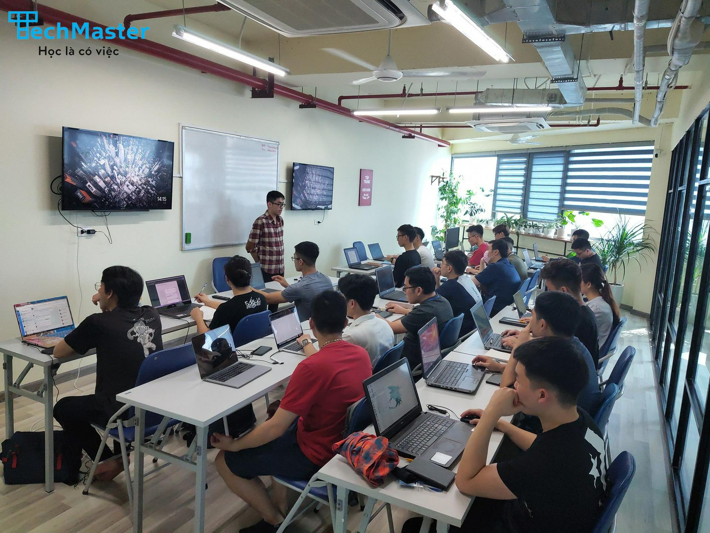

Homework
Muốn học Web Frontend - Có ngay lớp mới! Học đi chờ chi
23 tháng 06, 2021
Hà Nội bước vào những ngày nới lỏng giãn cách. Cảm giác như được làm mới mình khi có thể ra ngoài hít hà đôi chút
không khí mát mẻ sau mưa, có thể tạt vào quán ăn sáng quen thuộc sau chuỗi ngày chỉ ăn ở nhà hoặc đồ ship. Có
thể cắt mái tóc đã dài sắp chạm tới con mắt,... Thật vui, khi mọi thứ đã trở lại, nhưng đừng chủ quan, hãy nhớ
luôn đeo khẩu trang khi ra ngoài nhé. Các bạn vui, Techmaster cũng vui vì học viên sắp được gặp lại nhau chứ
không chỉ qua màn hình máy tính nữa rồi.
Lĩnh vực công nghệ thông tin đang phát triển mạnh mẽ từng ngày. Thường được nhắc tới thông qua các từ
khóa như: 4.0, chuyển đổi số, khoa học kỹ thuật, ngành mũi nhọn, tốc độ, tăng trưởng, thu nhập khủng,… Không chỉ
thu hút nhiều bạn trẻ năng động, đam mê, yêu thích công nghệ. Đây còn là lựa chọn “hấp dẫn” của nhiều người có
mong muốn chuyển ngành, tìm kiếm cho mình một hướng đi mới với cơ hội thăng tiến, môi trường làm việc tốt, thu
nhập cao…
Trong suốt thời gian giãn cách vừa qua, nhiều học viên mong mỏi được đăng ký học, được đi học. Nhiều người muốn
chuyển ngành, tiếp cận sang lĩnh vực mới mẻ này.
Không để học viên chờ lâu, tháng 6 này, tiếp tục mở lớp khai giảng lớp mới Khóa học Web Frontend + React
5 tháng dành cho người mới bắt đầu.
Lộ trình của khóa học Web Frontend 5 tháng:
- Web cơ bản: HTML, CSS, JavaScript cơ bản, JavaScript DOM
- Responsive web, Bootstrap, cắt HTML CSS
- Advanced Javascript ES6, jQuery, AJAX
- Thiết kế UI/UX cho phần mềm
- Hướng dẫn làm đồ án web tĩnh
- Web Frontend nâng cao với ReactJS
Khác biệt của Techmaster
- Làm ra sản phẩm cụ thể và xin được việc. Tham khảo sản phẩm học viên
- Đào tạo coder với định hướng nâng cấp lên software engineer.
- Bài giảng sinh động, dễ hiểu. Thực hành 70% thời lượng.
- Học phí chỉ bằng 1/2 đến 1/3 so với trung tâm khác + cam kết việc làm mức độ cao nhất.
- Kết hợp 3 phương pháp: thực hành phòng lab, eLearning và hội thảo trực tuyến.
Lịch khai giảng
- Ngày khai giảng dự kiến: Thứ 7 ngày 26/6/2021
- Lịch học: tối thứ 3, 5, 7 hàng tuần
- Thời gian: 18:30 - 21:30
- Địa điểm: Tầng 12A, tòa Viwaseen, 48 Tố Hữu, Trung Văn, Nam Từ Liêm, Hà Nội.
- Link khoá học : https://techmaster.vn/lo-trinh/front-end
- Tư vấn - đăng kí học: Ms Mẫn - 0963023185 (zalo)
Chương trình học thử 1 buổi giá chỉ 99.000đ (giá gốc 250.000đ)
- Dành cho 05 bạn đăng kí học thử sớm nhất
- Lần đầu tiên tổ chức chương trình học thử - với lớp Lộ trình thật, Techmaster mong muốn :
- Các bạn học viên chưa từng tiếp xúc với lập trình có cơ hội trải nghiệm học lập trình web
- Các bạn học viên đang quan tâm Lộ trình dài hạn cam kết việc làm tại Techmaster có thêm cơ sở để quyết định
tham gia khoá học
